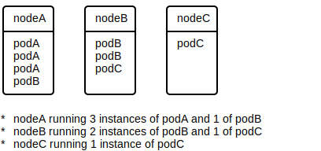

Kubernetes is a service orchestration framework that provides many of the plumbing pieces required for running services. These services include ...
Kubernetes is structured around containers.
In the context of containers, an ...
image is an application (or set of applications) packaged with all of its dependencies as an immutable and isolated filesystem. The filesystem typically contains all dependencies required for the application(s) run sealed at their correct version:
Images also typically include metadata describing its needs and operational standards. For example, the metadata may stipulate that the image ...
container is an instance of an image. A container creates an isolated copy of the image's filesystem, isolates the resources required for that image, and launches the entrypoint application for that image. That container can't see or access anything outside of the container unless explicitly allowed to by the user. For example, opening a port 8080 on a container won't open port 8080 on the host running it, but the user can explicitly ask that port 8080 in the container map to some port on the host.
As shown in the entity diagram above, each container is created from a single image, but that same image can be used for to create multiple containers. Another way to think about it is that an image is the blueprint of a factory and a container is the actual factory built from that blueprint. You can build multiple factories from the same blueprint.
Kubernetes requires two core components to run:
Different vendors provide different implementations of each. For example, certain vendors provide an OCI runtime that use virtualization technology for isolation instead of standard Linux isolation (e.g. cgroups).

OCIs and OCRs are also the basis for container engines, tools that are responsible for creating and running containers (similar in nature Kubernetes without the orchestration) as well as creating images and other high-level functionality such as local testing of containers. Docker Engine is an example of a container engine.

Kubernetes organizes services as a set of containers called pod.

Each pod is an isolated set of images that are required for each other to work. For example, a pod may contain an image for an HTTP application server, a SQL database, and an ElasticSearch instance. When running, all three of those containers would discover and talk to each other to form an instance of whatever service that pod is for.
Kubernetes often orchestrates containers over a cluster of machines. The containers for a pod are guaranteed to all be running on the same machine.
Similar to images, you can think of a pod as a blueprint. Many instances of a pod may be running on the cluster at the same time, often in an effort to distribute load and / or provide redundancy.

Nodes are the machines that pod run on. A Kubernetes cluster often contains multiple nodes, each with a certain amount of resources. Pod get assigned to nodes based on their resource requirements. For example, if a pod A requires 2gb of memory and node C has 24 gigs available, that node may get assigned to run that pod.

Kubernetes has a leader-follower architecture, meaning that of the nodes a small subset is chosen to lead / manage the others. The leaders are referred to as master nodes while the followers are referred to as worker nodes.

A master node can still run pod just like the worker nodes, but some of its resources will be tied up for the purpose of managing worker nodes.
TODO: Talk about how internally k8s treats everything like an object and the types of objects: pod, nodes, services, deployments, etc... Talk about labels and annotations
kubectl commands are typically organized into contexts, where each context is defines contextual information about the cluster: cluster location, cluster authentication, and default namespace. To ...
kubectl config set-context {CTX} --cluster={VAL}kubectl config set-context {CTX} --user={VAL}kubectl config set-context {CTX} --namespace={VAL}kubectl config use-context {CTX}Context information is usually stored in $HOME/.kube/config.
kubectl commands that target an object require a namespace. That namespace can either be supplied via ...
--namespace={NS} argument to target a specific namespace,--all-namespaces argument to target all namespaces,, ... or through the default namespace set for the current context. If not set explicitly in the context, the namespace will be default.
Kubernetes API is exposed as a RESTful interface, meaning everything is represented as an object and accessed / mutated using standard REST verbs (GET, PUT, DELETE, etc..). kubectl uses this interface to access the cluster. For example, accessing https://cluster/api/v1/namespaces/default/pod/obn_pod is equivalent to running kubectl get pod obj_pod. The difference between the two is that by default kubectl formats the output in a human friendly manner, often omitting or shortening certain details. That output can be controlled using flags. Specifically, to ...
-o wide.wc, use --no-headers.-o json-o yaml-o jsonpath --template={TEMPLATE}, where the template is a JSONPath expression.get / describe allows you to get details on a specific objects and resources. To get an overview of a ...
kubectl get {RES}.kubectl get {RES} {OBJ}.describe provides more in-depth information vs get.
Examples of object access:
kubectl get componentstatuses - basic cluster diagnosticskubectl get nodes - list nodeskubectl describe nodes {NAME} - node information (roles, labels, software versions, running pod, etc..)kubectl get daemonSets --namespace={NAMESPACE} {NAME}kubectl get deployments --namespace={NAMESPACE} {NAME}kubectl get services --namespace={NAMESPACE} {NAME}apply allows you to create and update objects. To create or update using ...
kubectl apply -f obj.yaml.kubectl apply -f obj.json.kubectl apply -f -.It will not allow you to delete objects.
⚠️NOTE️️️⚠️
Is this true? See kubectl apply with prune flag.
delete allows you to delete an object. To delete using ...
kubectl delete -f obj.yaml.kubectl delete -f obj.json.kubectl apply -f -.kubectl delete {RES} {OBJ}label allows you to label an object.
kubectl label pods my_pod mark=55a - set label mark to value 55a on pod my_pod.kubectl label --overwrite pods my_pod mark=77a - overwrite label mark to value 77a on pod my_pod.kubectl label pods my_pod mark- - remove label mark from pod my_pod.Note that without the overwrite flag, an existing label won't be replaced.
proxy allows you to launch a proxy that lets you talk internally with the Kubernetes API server.
kubectl proxyTODO: CONTINUE FORM CH4 DEBUGGING COMMANDS SECTION
TODO: CONTINUE FORM CH4 DEBUGGING COMMANDS SECTION
TODO: CONTINUE FORM CH4 DEBUGGING COMMANDS SECTION
TODO: CONTINUE FORM CH4 DEBUGGING COMMANDS SECTION
TODO: CONTINUE FORM CH4 DEBUGGING COMMANDS SECTION
TODO: CONTINUE FORM CH4 DEBUGGING COMMANDS SECTION
TODO: CONTINUE FORM CH4 DEBUGGING COMMANDS SECTION
image - An application (or set of applications) packaged with all of its dependencies as an immutable and isolated filesystem. The filesystem typically contains all dependencies required for the application(s) run sealed at their correct version.
Images also typically include metadata describing its needs and operational standards (e.g. memory requirements).
container - An instance of an image. A container creates an isolated copy of the image's filesystem, isolates the resources required for that image, and launches the entrypoint application for that image. That container can't see or access anything outside of the container unless explicitly allowed to by the user. For example, opening a port 8080 on a container won't open port 8080 on the host running it, but the user can explicitly ask that port 8080 in the container map to some port on the host.
registry - A service for storing and retrieving images.
multistage image - A container image produced by merging portions of other container images together. For example, to build a multistage image that contains Java as well as compiled C++ binaries, ...
The end result is that the multistage build only contains the relevant portions of its "stages" (previous images), leading to a more focused image with smaller size.
open container initiative runtime - A runtime responsible for only creating and launching containers. Examples include runC, rkt, runV, gviso, etc.. Some of these use Linux isolation technology (cgroups and namespaces) while others use virtualization technology.
container runtime interface - A runtime responsible for the high-level management of containers and images: image management, image distribution, container mounts / storage, container networking, etc..
CRIs are also responsible for running containers, but typically do so by delegating to an OCI runtime. Examples of CRIs include containerd, and cri-o.
container engine - A high-level application / cohesive set of applications used for all the things OCI runtimes and CRIs are used for as well as building images, signing images, and several other extra features. Container engines typically delegate to OCI runtimes and CRIs for most of their functionality.
Examples include Docker Engine and Container Tools (podman for running containers, buildah for building images, and skopeo for image distribution).
Kubernetes - A tool for orchestrating multiple containers across a set machines. Provides features such as load balancing, service naming, service discovery, automated service scaling, and automated service recovery.
node - A host that Kubernetes uses to run the containers its orchestrating.
master node - A node responsible for the managing the cluster (scheduling, API server, etc..).
worker node - A node responsible for running application containers.
pod - A set of containers all bundled together as a single deployable unit, where all containers in that bundle are intended to run on the same node. Pod are typically associated with microservices. For example, a microservice may contain a Java application and the database server it interfaces with.
namespace - A user-defined category for objects in a cluster (e.g. pod), allowing Kubernetes do things such as apply isolation and access control. By default, the kubectl command uses the namespace default if no namespace is specified.
⚠️NOTE️️️⚠️
The book tells you to think of it like it's a folder.
ingress - A frontend that's able to combine multiple pod together as a single API for external consumption.
kube-system - A namespace for internal cluster components (pod) that Kubernetes runs for itself. For example, Kubernetes's DNS service, Kubernetes's proxy service, etc.. all run under the kube-system namespace.
kube-proxy - An internal Kubernetes proxy service responsible for routing traffic to the correct services and load balancing between a service's pod. Runs on every node in the cluster.
core-dns - An internal Kubernetes DNS service responsible for naming and discovery of the services running on the cluster. Older versions of Kubernetes call this kube-dns instead of core-dns.
kubernetes-dashboard - An internal Kubernetes service responsible for providing a GUI to interface with and explore the cluster.
kubectl - The standard command-line client for Kubernetes.
context - In reference to kubectl, context refers to default cluster access settings kubectl applies when running some command: cluster location, cluster authentication, and default namespace.
DaemonSet - An API object that allows for running something on every node.
⚠️NOTE️️️⚠️
Unsure about this. It says it'll be described further in chapter 5 and that normally it ensures kube-proxy is running on all nodes (may not be the case on some clouds).
label - Objects in Kubernetes can have labels and annotations applied to them, such that objects with specific labels and / or annotations can be targeted as a group.